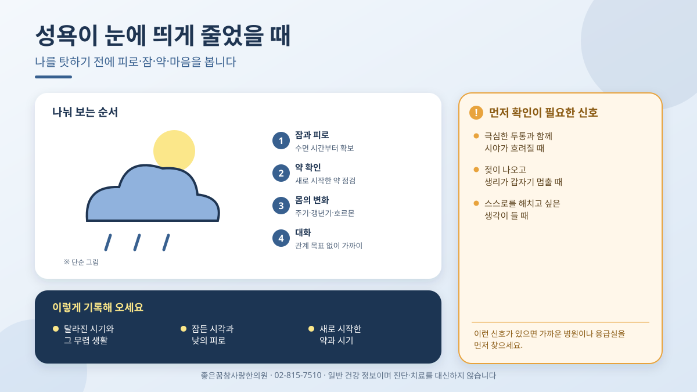

이종호 한의사 감수좋은꿈참사랑한의원 대표원장 (한의사 면허번호 19769)발행 2026-11-26 · 수정 2026-11-26
이 글의 차례
하루를 마치고 침대에 누우면 배우자가 다가오는 기척에 먼저 등을 돌리게 됩니다. 싫어서가 아니라 그냥 아무 마음이 들지 않습니다. 예전에는 이렇지 않았는데 하는 생각에 미안함과 걱정이 함께 밀려옵니다. 진료실에서 아주 조심스럽게 꺼내시는 고민 가운데 하나입니다.
성욕이 줄었다는 이야기는 남녀를 가리지 않고 듣습니다. 다만 말하기가 쉽지 않아서 대개 다른 불편, 예를 들어 피로나 잠, 갱년기 증상을 이야기하다가 끝에 덧붙이듯 꺼내십니다. 그만큼 오래 혼자 품고 계셨던 고민이라는 뜻입니다.
먼저 말씀드리고 싶은 것은 성욕은 원래 늘 같은 높이로 유지되는 것이 아니라는 점입니다. 몸이 지쳤을 때, 마음이 무거울 때, 생활이 크게 바뀌었을 때 자연스레 줄었다가 다시 돌아오기도 합니다. 그래서 줄었다는 사실보다 얼마나 오래, 무엇과 함께 줄었는지가 중요합니다.
이 글에서는 성욕 감소가 어떤 이유들과 맞물려 있는지, 어떤 진료과에서 무엇을 확인하면 좋은지, 생활에서는 무엇을 살피고 한의원에서는 어떤 부분을 함께 볼 수 있는지를 차근차근 말씀드리겠습니다.
성욕 감소는 어떤 상태를 말하나요
성욕은 관계를 원하는 마음, 상상이나 기대, 가까워지고 싶은 느낌을 두루 일컫는 말입니다. 성욕이 줄었다는 것은 이런 마음이 예전보다 잘 생기지 않거나, 생기더라도 금방 사라지는 상태를 말합니다.
사람마다 원래의 높이가 다르기 때문에 남과 비교해서 많다, 적다를 따지기는 어렵습니다. 기준은 나 자신의 예전 모습입니다. 예전과 비교해 눈에 띄게 줄었고, 그 때문에 본인이나 배우자가 고민하고 있다면 한 번 살펴볼 만합니다.
몇 주 바쁘고 지쳐서 잠깐 줄었다가 돌아온 것은 자연스러운 흐름입니다. 몇 달째 이어지거나, 피로와 기분 변화, 다른 몸의 불편과 함께 왔다면 그 배경을 함께 살펴보는 것이 좋습니다.
왜 성욕이 줄어들까요?
가장 흔한 이유는 피로와 잠 부족입니다. 몸이 지치면 몸은 살아가는 데 꼭 필요한 일부터 챙기고, 관계에 대한 마음은 뒤로 밀립니다. 야근과 육아, 간병처럼 쉴 틈 없는 시기에는 성욕이 줄어드는 것이 당연할 수 있습니다.
마음의 무게도 큰 몫을 합니다. 우울감이나 불안이 깊을 때, 큰 스트레스를 겪고 있을 때는 즐거움을 느끼는 힘 자체가 줄어듭니다. 성욕 감소가 마음이 지쳤다는 첫 신호인 경우도 있습니다.
호르몬의 변화도 영향을 줍니다. 남성은 남성 호르몬이 줄어드는 시기에, 여성은 출산 뒤와 수유 중, 갱년기 무렵에 성욕이 달라지기 쉽습니다. 갑상선 기능이 떨어졌을 때나 혈당이 높을 때도 기운과 함께 성욕이 줄 수 있다고 알려져 있습니다.
드시는 약도 확인해야 합니다. 일부 우울증 약, 혈압약, 호르몬 약, 탈모 약 등은 성욕에 영향을 줄 수 있다고 알려져 있습니다. 약 때문이라고 여겨지더라도 혼자 끊지 마시고 처방한 선생님과 상의하셔야 합니다.
관계의 흐름도 함께 봅니다
성욕은 몸과 마음뿐 아니라 두 사람 사이의 흐름과도 이어져 있습니다. 서운함이 쌓였거나, 대화가 줄었거나, 관계가 의무처럼 느껴지면 마음이 먼저 닫히기 쉽습니다. 몸의 문제가 아니라 관계의 피로가 성욕 감소로 나타나는 경우도 있습니다.
관계 때 통증이 있었던 경험도 성욕을 줄입니다. 아팠던 기억이 있으면 몸이 먼저 긴장하고 피하게 됩니다. 여성이라면 성교통, 남성이라면 발기나 사정에 대한 걱정이 함께 있지는 않은지 살펴봐야 합니다.
이런 이야기는 꺼내기 어렵지만, 무엇이 먼저인지 나눠 보면 해결의 실마리가 보입니다. 몸의 피로가 먼저인지, 마음의 지침이 먼저인지, 관계의 서운함이 먼저인지를 함께 정리해 보겠습니다.
성욕 감소와 헷갈리기 쉬운 상태
성욕은 있는데 몸이 따라 주지 않는 경우가 있습니다. 남성의 발기부전, 여성의 질 건조나 성교통이 그렇습니다. 이 경우는 성욕 감소와는 살피는 방향이 조금 다르니, 마음이 없는 것인지 몸이 어려운 것인지를 나눠서 말씀해 주시면 좋습니다.
전반적인 무기력과 함께 성욕도 줄었다면, 성욕만의 문제가 아니라 몸 전체의 기운이 떨어진 상태일 수 있습니다. 만성 피로, 빈혈, 갑상선 기능 저하, 우울감처럼 피로와 의욕 저하를 함께 만드는 상태를 먼저 살펴보는 것이 순서입니다.
어떤 진료과에서 무엇을 확인하나요
남성이라면 비뇨의학과에서 남성 호르몬 검사와 발기 상태를 확인해 볼 수 있습니다. 여성이라면 산부인과에서 생리 주기와 호르몬, 질 건조나 통증 여부를 상의할 수 있습니다. 기운이 전반적으로 떨어졌다면 내과에서 갑상선과 혈당, 빈혈 검사를 받아 보시는 것도 좋습니다.
우울감이나 불안이 함께 있다면 정신건강의학과 상담도 함께 고려해 보세요. 마음이 회복되면서 성욕도 함께 돌아오는 경우가 많습니다. 관계의 어려움이 크다면 부부 상담이나 성 상담이 도움이 될 수 있습니다.
여러 진료과를 다녀야 한다는 것이 부담스러우실 수 있습니다. 가장 불편한 것부터 하나씩, 순서를 정해 확인해 가시면 됩니다. 진료실에서 그 순서를 함께 정리해 드릴 수 있습니다.
출산과 육아 시기의 성욕
출산 뒤에는 몸이 회복하는 데 시간이 걸리고, 수유 중에는 호르몬의 흐름 때문에 성욕이 줄고 질이 건조해지기 쉽습니다. 밤잠을 제대로 못 자는 날이 이어지면 관계에 대한 마음이 생기지 않는 것은 무척 자연스러운 일입니다.
배우자 쪽도 육아와 일 사이에서 지쳐 성욕이 줄어드는 경우가 많습니다. 두 사람 모두 지친 시기에는 서로의 마음을 탓하기보다, 이 시기가 지나가는 동안 서로를 어떻게 돌볼지를 먼저 이야기해 보시길 권합니다.
출산 뒤 몇 달이 지나도 회복이 더디고 기운이 떨어진 느낌이 이어진다면 산후 회복 전반을 함께 살펴보는 것이 좋습니다. 산후 우울감이 함께 있지는 않은지도 확인해 보세요.
갱년기 무렵 달라지는 몸
여성은 갱년기 무렵 여성 호르몬이 줄면서 열감, 땀, 잠의 변화와 함께 성욕이 줄고 질이 건조해지는 경우가 많습니다. 관계 때 불편함이 생기면 마음도 함께 멀어지기 쉽습니다. 산부인과에서 건조함과 통증을 줄이는 방법을 상의해 보실 수 있습니다.
남성도 중년 무렵 남성 호르몬이 서서히 줄면서 기운과 의욕, 성욕이 함께 떨어지는 경우가 있습니다. 뱃살이 늘고 잠이 얕아지는 변화와 함께 온다면 비뇨의학과에서 호르몬 검사를 받아 보시는 것도 방법입니다.
이 시기의 변화는 몸이 새로운 균형을 찾아가는 과정이기도 합니다. 예전과 똑같아지는 것을 목표로 하기보다, 지금 몸에 맞는 편안함을 찾는 쪽으로 마음을 두시면 부담이 줄어듭니다.
성욕 감소로 고민하는 분들이 자주 헷갈리는 것
첫째, 성욕이 줄면 사랑이 식은 것이라는 생각입니다. 성욕은 피로와 잠, 호르몬, 마음의 상태에 따라 오르내립니다. 성욕이 줄었다고 해서 배우자에 대한 마음이 사라졌다는 뜻은 아닙니다.
둘째, 보양식이나 영양제로 금방 돌아온다는 기대입니다. 원인이 잠이나 마음, 약, 호르몬에 있다면 그 부분을 먼저 살펴야 합니다. 출처가 불분명한 제품은 성분을 알기 어려워 몸에 부담이 될 수 있습니다.
셋째, 나만 이런 것 같다는 외로움입니다. 진료실에서 생각보다 많은 분이 같은 고민을 털어놓으십니다. 이야기를 꺼내는 것만으로도 마음의 짐이 한결 가벼워지는 경우가 많습니다.
배우자와 나누는 대화
성욕이 줄었다는 이야기를 배우자에게 꺼내기는 쉽지 않습니다. 말하지 않고 피하기만 하면 배우자는 거절당했다고 느끼고, 나는 미안함에 더 멀어지는 흐름이 생기기 쉽습니다.
비난이나 변명 대신 요즘 내 몸과 마음이 어떤지를 담담하게 나눠 보세요. 피곤하다, 잠이 부족하다, 마음이 무겁다는 이야기만으로도 배우자가 상황을 이해하는 데 큰 도움이 됩니다. 관계를 목표로 두지 않는 가까움, 손잡기나 대화부터 다시 시작해도 괜찮습니다.
먼저 이렇게 여쭙니다
처음 오시면 대략 이런 내용을 여쭙니다. 편하신 만큼만 말씀하셔도 괜찮습니다.
- 언제부터, 어떤 계기로 달라졌다고 느끼시나요?
- 잠과 피로, 기분은 요즘 어떠신가요?
- 생리 주기나 갱년기 증상, 출산과 수유는 어떠신가요?
- 발기나 질 건조, 관계 때 통증 같은 몸의 어려움은 없나요?
- 최근 새로 드시기 시작한 약이 있나요?
- 배우자와의 대화나 관계에서 달라진 점이 있나요?
모든 질문에 답하지 못하셔도 괜찮습니다. 말하기 어려운 부분은 건너뛰셔도 되고, 다음 진료 때 이어서 말씀하셔도 됩니다. 최근 건강검진 결과지와 드시는 약 봉투를 함께 가져와 주시면 피로와 기운을 만드는 다른 이유가 없는지 함께 살펴보기가 쉬워집니다.
일상에서 먼저 해 볼 수 있는 것
- 잠드는 시각을 일정하게 맞추고 수면 시간 확보하기
- 일주일에 세 번 30분 걷기, 하체 근력 운동
- 술자리 줄이기, 금연 시작하기
- 끼니마다 단백질 반찬 챙기기
- 하루 10분이라도 배우자와 스마트폰 없이 이야기하기
- 관계를 목표로 두지 않는 가벼운 스킨십부터 다시 시작하기
성욕은 억지로 끌어올리기 어렵습니다. 대신 몸이 덜 지치고 마음에 여유가 생기면 자연스레 돌아올 자리가 생깁니다. 그 자리를 만드는 것이 생활 관리의 목표입니다.
특히 잠은 성욕과 가장 가까운 생활 요소 가운데 하나입니다. 잠이 짧은 날이 이어지면 몸은 쉬는 데 힘을 먼저 쓰고, 기분과 의욕도 함께 처집니다. 잠드는 시각을 30분 앞당기는 것부터 시작해 보세요. 잠들기 전 휴대폰을 내려놓고 방 불빛을 낮추는 것만으로도 잠이 한결 깊어지는 분이 많습니다.
한의원에서 함께 살필 수 있는 경우
- 피로와 무기력이 쌓여 관계에 대한 마음까지 줄어든 경우
- 잠이 얕고 자주 깨며 아침이 유난히 힘든 경우
- 아랫배와 손발이 차고 허리가 무거운 경우
- 갱년기 무렵 열감, 땀, 기분 변화와 함께 성욕이 줄어든 경우
- 출산 뒤 회복이 더디고 기운이 떨어진 경우
좋은꿈참사랑한의원에서는 진찰을 마친 뒤 피로와 잠, 냉기, 기분, 주기의 흐름을 함께 보고 지금 상태에 맞는 방향을 정합니다. 침이나 온열 관리, 한약 상담 가운데 무엇이 맞는지는 진찰한 내용을 바탕으로 정합니다.
한약을 상의할 때는 드시는 약을 모두 확인하고 신중하게 정합니다. 처방받은 약은 상의 없이 멈추지 않으시고, 수유 중이시거나 임신 중이시라면 먼저 알려 주신 뒤 산부인과와 상의해 주세요. 한의원 진료는 다른 진료과의 확인을 대신하지 않고 나란히 갑니다.
이렇게 기록해 오시면 상담이 쉬워집니다
- 달라졌다고 느낀 시기와 그 무렵의 생활 변화
- 잠든 시각과 깬 시각, 낮의 피로
- 기분이 처졌던 날과 긴장이 컸던 날
- 생리 시작일이나 갱년기 증상이 있었던 날
- 새로 시작한 약과 그 시기
기록을 나란히 놓고 보면 성욕이 줄어든 시기가 어떤 생활 변화나 약, 주기와 겹치는지가 보이기 시작합니다. 그 겹침이 다음 걸음을 정하는 실마리가 됩니다. 기록이 부담스러우시면 일주일에 한 번, 그 주의 피로와 기분을 한 줄로만 적어 오셔도 충분합니다.
나를 탓하지 않으셨으면
성욕이 줄었다는 것은 내가 부족하다는 뜻이 아니라, 몸과 마음이 지금 여유가 없다는 신호인 경우가 많습니다. 그 신호를 알아차리고 이야기를 꺼내신 것만으로도 이미 중요한 걸음을 떼신 겁니다. 혼자 오래 품고 있던 고민일수록 꺼내 놓았을 때 생각보다 가볍게 풀리는 경우가 많습니다. 서두르지 않고 하나씩 함께 살펴보겠습니다.
이번 주에는 잠 하나, 걷기 하나만 골라 보세요. 몸에 여유가 조금씩 돌아오는 흐름을 진료실에서 함께 살피겠습니다.
이런 증상은 먼저 확인이 필요합니다
- 극심한 두통과 함께 시야가 흐려지거나 젖이 나오고 생리가 갑자기 멈춘 경우
- 마음이 깊이 가라앉아 스스로를 해치고 싶은 생각이 드는 경우
이런 신호가 있으면 한의원보다 가까운 병원이나 응급실을 먼저 찾으세요.
함께 읽으면 좋은 글
- 40~50대 남성이 기운과 의욕이 떨어지고 잠·뱃살이 달라질 때(남성 갱년기)는 무엇을 살피나요?
- 발기가 잘 되지 않거나 유지되지 않을 때(발기부전)는 무엇을 살피고 어디서부터 시작하나요?
- 부부 관계 때 아픈 성교통은 왜 생기고, 어디서부터 어떻게 상의하나요?
- 갱년기에 몸이 달라질 때 한의원에서는 무엇을 먼저 묻나요?
- 충분히 쉬어도 몸이 늘 피곤한 만성피로는 어떤 점을 살펴보나요?

여쭙는 것
- 언제부터, 어떤 계기로 달라졌다고 느끼시나요?
- 잠과 피로, 기분은 요즘 어떠신가요?
- 생리 주기나 갱년기 증상, 출산과 수유는 어떠신가요?
생활에서 해 볼 것
- 잠드는 시각을 일정하게 맞추고 수면 시간 확보하기
- 일주일에 세 번 30분 걷기, 하체 근력 운동
- 술자리 줄이기, 금연 시작하기
한의원에서 함께 살필 것
- 피로와 무기력이 쌓여 관계에 대한 마음까지 줄어든 경우
- 잠이 얕고 자주 깨며 아침이 유난히 힘든 경우
- 아랫배와 손발이 차고 허리가 무거운 경우
먼저 확인이 필요한 신호
- 극심한 두통과 함께 시야가 흐려지거나 젖이 나오고 생리가 갑자기 멈춘 경우
- 마음이 깊이 가라앉아 스스로를 해치고 싶은 생각이 드는 경우
한눈에 보는 표
| 구분 | 핵심 |
|---|---|
| 여쭙는 것 | 언제부터, 어떤 계기로 달라졌다고 느끼시나요? 잠과 피로, 기분은 요즘 어떠신가요? |
| 생활에서 해 볼 것 | 잠드는 시각을 일정하게 맞추고 수면 시간 확보하기 일주일에 세 번 30분 걷기, 하체 근력 운동 |
| 한의원에서 함께 살필 것 | 피로와 무기력이 쌓여 관계에 대한 마음까지 줄어든 경우 잠이 얕고 자주 깨며 아침이 유난히 힘든 경우 |
| 먼저 확인이 필요한 신호 | 극심한 두통과 함께 시야가 흐려지거나 젖이 나오고 생리가 갑자기 멈춘 경우 마음이 깊이 가라앉아 스스로를 해치고 싶은 생각이 드는 경우 |
자주 묻는 질문
성욕이 줄어든 것도 진료를 받을 일인가요?
몇 달째 이어지거나 피로, 기분 변화, 다른 불편과 함께 왔다면 한 번 살펴보실 만합니다. 본인이나 배우자가 고민하고 있다면 그것만으로도 상의할 이유가 충분합니다.
먹는 약 때문일 수도 있나요?
일부 약은 성욕에 영향을 줄 수 있다고 알려져 있습니다. 다만 혼자 약을 끊지 마시고, 처방한 선생님께 고민을 말씀드려 상의하시는 것이 순서입니다.
한의원에서는 무엇을 보나요?
피로와 잠, 손발과 아랫배의 냉기, 기분, 생리 주기나 갱년기 증상처럼 몸 전체의 흐름을 함께 봅니다. 진찰한 내용을 바탕으로 생활과 진료 방향을 정합니다.
배우자와 함께 상담해도 되나요?
함께 오셔도 괜찮고 혼자 오셔도 괜찮습니다. 함께 이야기를 나누면 서로의 오해가 풀리고 생활에서 함께 바꿔 볼 것을 정하기 쉬워집니다.
좋은꿈참사랑한의원은 재진 때 지난번 이야기부터 이어서 여쭙니다. 진료시간과 예약은 오시는 길에서 확인하세요.
어디서 상담받을 수 있나요?
좋은꿈참사랑한의원은 서울 동작구 만양로2길 2 신성빌딩 3층·5층(서울 동작구 상도동, 7호선 상도역 3번 출구 근처)에 있습니다. 한의사 3명(이종호 대표원장, 조영기 수석진료원장, 정원영 진료원장)이 진료합니다. 진료시간은 평일 09:30~20:00(점심 13:00~14:00), 토·일·공휴일 09:30~15:00이며, 방문 전 전화로 확인을 권합니다. 예약은 네이버 예약, 카카오톡 상담, 전화 02-815-7510로 받습니다.
이 글은 일반적인 건강 정보이며 개인의 진단이나 치료를 대신하지 않습니다. 증상이 있거나 복용 중인 약이 있다면 진료를 통해 확인하세요. 치료 효과는 개인마다 다를 수 있습니다.
작성 기준: 일반적으로 알려져 있는 건강 정보를 참고해 정리했습니다(대표원장 감수). 증상 기록은 1~2주 동안 하루 1회, 비슷한 시간에 적어 오시면 지난 상태와 비교하기 쉽습니다.